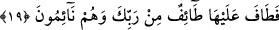

devamında eğer biz “illâ Zeyden” deyip istisnâ yapacak olursak, bir başka ifâdeyle
“insanlar Zeyd hâriç çıktılar” dersek, Zeyd’i bir kez daha açıktan açığa zikretmiş oluruz.
İşte böylece istisnâ kök yapısına uygun olarak ikili duruma işâret etmektedir.
Râğıb İsfahânî’nin îzâhına göre istisnâ; daha önce geçen genel anlamlı bir lafzın
hükmünün kapsamından bir kısmını hüküm dışına çıkaran bir lafız getirmektir. Ya da
istisnâ; daha önce geçen genel anlamlı bir lafzın hükmünden yine o lafzın hükmünün
tamamını hüküm dışına çıkarmaktır. Birinciye örnek olarak Allah’ın şu âyetini
gösterebiliriz “De ki: bana vahyolunanda, leş veya akıtılmış kan yahut domuz eti -ki
pisliğin kendisidir- ya da günah işlenerek Allah’tan başkası adına kesilmiş bir
hayvandan başka yiyecek kimseye haram kılınmış bir şey bulamıyorum.” (el-En’am,
6/145) İstisnânın ikinci çeşidine ise şu cümleleri örnek verebiliriz: “Mutlaka şöyle
yapacağım. İnşâallah”, “Kölem hür olsun. İnşâallah”, “Karım boş olsun. İnşâallah”
19. Fakat onlar daha uykudayken Rabbinin katından (gönderilen) kuşatıcı bir
âfet (ateş) bahçeyi sarıverdi.
Sarıverdi de orası meyveleri devşirilmiş gibi oldu.
Âyetin metninde yer alan “tâif” kelimesi, “kuşatıcı belâ” anlamınadır. Nitekim
“derken onun serveti kuşatılıp yok edildi” (el-Kehf, 18/42) âyet-i kerîmesinde de
kelime aynı mânâya kullanılmıştır. Bu âfet, kâfirlerin bahçesine gece indirilmiştir.
Çünkü “tâif” yâni kuşatıcı belâ ancak gece meydana gelir. Sonra âyetin tercümesinde
başta yer alsa bile Arapçasında sonda gelen “ve hum nâimûn: onlar uykuda iken”
ibâresi de bu âfetin bahçelerine gece indiğine işâret etmektedir. Bu kuşatıcı belâ, o
bahçeye gökten inmiş ve bahçeyi tamamen yakmıştı.
Râğıb İsfahânî’nin ifâdesine göre “tâfe” kelimesinin aslı olan “tavf” masdarı,
herhangi bir şeyin çevresinde dönmek anlamınadır. Nitekim herhangi bir evi
hırsızlardan korumak üzere bekçi tutulan kimse, bu görevini yerine getirirken o evin
çevresinde dolaştığı için bekçi anlamına kendisine “tâif” denmiştir. Bu dönüp dolaşma
anlamından yola çıkılarak cinlere, hayallere, hizmetçilere ve daha başka şeylere istiâre
yoluyla hep “tâif” denmiştir. Allah’ın bu âyet-i kerîmede “tâfe” fiilini kullanması,
kâfirlerin başlarına gelen belânın ta’riz yoluyla ifâde edilmesinden ibârettir.
“Onlar uykuda iken” ifâdesi, “Allah’ın takdirinin tahakkukundan habersizler iken”
demektir. Ya da “bahçeye gelen o âfetin gerçekleşmesinden, ölümün kardeşi olan
uykuda bulunduklarından dolayı gafil idiler” anlamındadır.
Uyku, insanın beynine yükselen buhar rutûbeti nedeniyle beyin sinirlerinin gevşemesi
hâlidir. Uyku, Allah’ın insanın rûhunu öldürmeksizin almasıdır. Bir başka ifâdeyle
Allah’ın, rûhun ışığının cesedin bâtınına değil zâhirine ulaşmasına engel olmasıdır. Bir